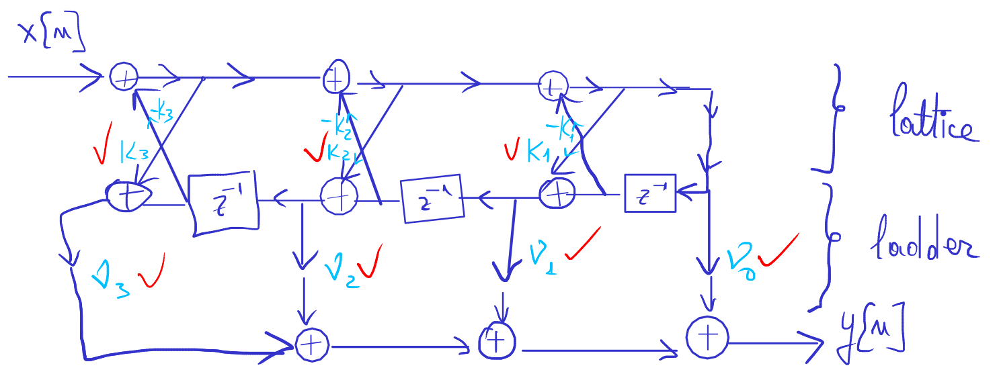

Implementing digital IIR filters in the lattice form
Lab 8, SDP
1 Objective
The students should become familiar with lattice-ladder-type realization structure used for implementing IIR filters.
2 Theoretical notions
The lattice-ladder implementation form of an IIR filter of order 3 is below:

Equations:
\[\begin{aligned} H(z) &= \frac{C(z)}{A(z)} \end{aligned}\]
The reflection coefficients \(K_i\) are found just like for FIR systems (previous lab.): \[\begin{aligned} A_0(z) &= B_0(z) = 1 \\ A_m(z) &= A_{m-1}(z) + K_m \cdot z^{-1} \cdot B_{m-1}(z) \\ A_{m-1}(z) &= \frac{A_m(z) - K_m \cdot B_m(z)}{1 - K_m^2} \\ B_m(z) &= z^{-m} B_m(z^{-1}) = \textrm{ like }A_m(z)\textrm{, with coefficients reversed} \end{aligned}\]
Additionally, for the \(\nu_i\) coefficients we use a similar equation: \[\begin{aligned} C_{m-1}(z) &= C_m(z) - \nu_m \cdot B_m(z) \end{aligned}\]
3 Theoretical exercises
Consider the causal IIR system with poles and zeros, with the system function: \[H(z) = \frac{ 1 + 2z^{-1} + 3z^{-2} + 2z^{-3} }{ 1 + \frac{2}{5}z^{-1} + \frac{7}{20}z^{-2} + \frac{1}{2}z^{-3} } \]
Find and draw the equivalent lattice structure for the IIR filter.
Consider the causal IIR system, with no zeros, with the following system function: \[H(z) = \frac{1}{ 1 + \frac{2}{5}z^{-1} + \frac{7}{20}z^{-2} + \frac{1}{2}z^{-3} } \]
Find and draw the equivalent lattice structure for the IIR filter.
4 Practical exercises
In Matlab, use the
fdatooltool to design one of the following filters:- A low-pass IIR filter of order 4, elliptic type, with cutoff frequency of 6kHz at a sampling frequency of 44.1kHz;
- A high-pass IIR filter of order 4, elliptic type, with cutoff frequency of 2.5kHz at a sampling frequency of 44.1kHz;
- A band-pass IIR filter of order 4, elliptic type, with passband between 0.5kHz and 5.5kHz at a sampling frequency of 44.1kHz.
Note: for this type of filter,
fdatoolrequires not the cutoff frequency, but the limits of the transition band around that cutoff frequency.Export the filter coefficients to Matlab Workspace, with the name
NumandDen.Use the
tf2latc()function from Matlab to convert the coefficientsNumandDenof the transfer function to coefficients of the lattice-ladder form. Name the resulting vectors \(K\) andVand display them.Afterwards, use the inverse function
latc2tf()to convert the coefficientsKandVof the lattice-ladder form back into coefficients of the direct forms, and check that we obtain the same values as inNumandDen.In Simulink, implement the FIR filter in lattice-ladder form.
- Build the schematic, putting in the Gain blocks the coefficients from the vectors
K(K(1),K(2), etc) andV(V(1),V(2), etc) - At the output put a visualization block (“Scope”) and display the impulse response (input “Discrete Impulse”) and the step response (input “Step”).
- Build the schematic, putting in the Gain blocks the coefficients from the vectors
In Matlab, create a function to filter a vector
xwith a IIR system with known lattice-ladder coefficientsKandV, obtaining the output vectory.Find a way to compute the output
y[n]at some time momentn, based on the schematic. In other words, if we know the schematic, how can we implement it in the form of equations or lines of code?You can use the following guiding template:
function y = filter_lattice_IIR(K, V, x) % Filter the vector x with a lattice IIR filter with coefficients K and V ord = length(K); % Write code here: for i=1:length(x) y(n) = ... end endTest this function, by calling it with the coefficients
KandVof the filter above, using an input signalxas follows:- a vector with one 1 followed by 19 zeros (unit impulse)
- a vector with 20 values of 1 (unit step)
Plot the resulting vectors with
stem().
5 Final questions
- TBD